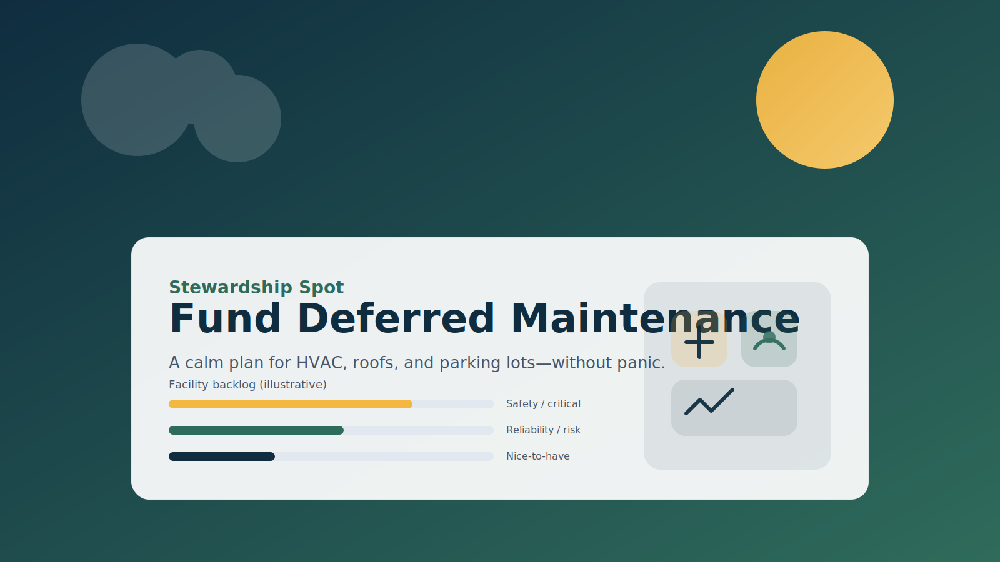

Facilities
How to Fund Deferred Maintenance Without Killing Momentum
HVAC, parking lots, roofs, and backlogs—how to communicate need with confidence (not desperation).
Stewardship Spot is a practical, pastoral resource to help church leaders communicate needs, invite generosity, and fund projects in a way that builds trust and momentum.
Built for pastors and leadership teams: clear language, practical tools, and a steady process.
Credible communication, healthier giving conversations, and a plan your leaders can stand behind.
Language that is clear and confident—without sounding desperate, salesy, or manipulative.
Repeatable playbooks for maintenance needs, project funding, campaigns, and major-gift invitations.
Clear next steps, defined outcomes, and fewer “we should probably…” meetings that go nowhere.
Senior Stewardship Consultant with INJOY Stewardship • 25 years of ministry experience
Frank Chiapperino helps churches fund their vision and projects with clarity—without gimmicks, guilt, or awkward pressure. Stewardship Spot provides practical tools for real-world needs like deferred maintenance, capital projects, and major-gift conversations.
Clear language. A steady plan. Next steps your leaders can actually execute.
Start with the article that matches your current challenge.
Four long-form articles designed to sound like a helpful coach—not a fundraiser.
HVAC, parking lots, roofs, and backlogs—how to communicate need with confidence (not desperation).
Concrete, Compelling, Consistent, Consequences—plus practical examples and a mini checklist.
A relationship-first posture, vision alignment, and a simple follow-up plan that respects people.
A steady process protects clarity, alignment, momentum, and trust during high-stakes projects.